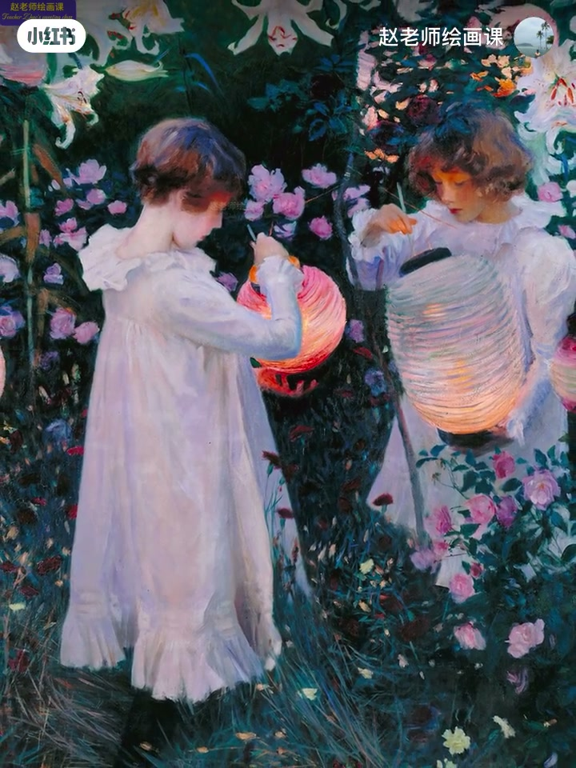
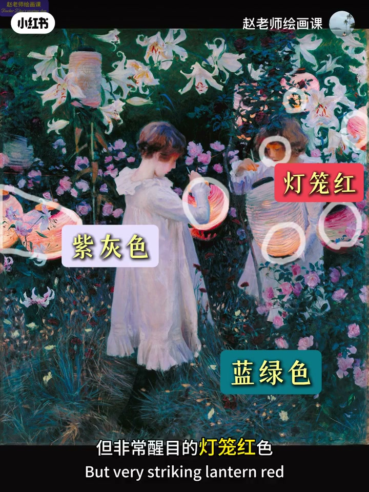
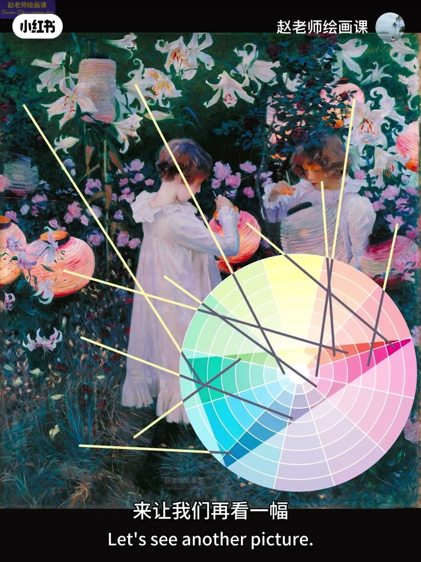
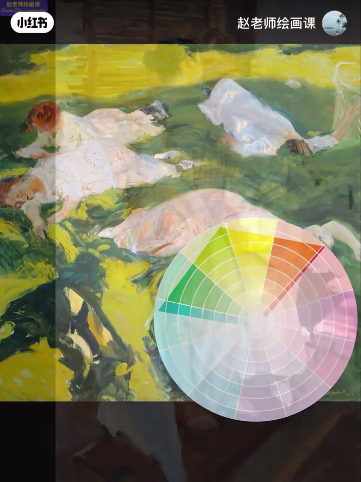

内容要点
大师色彩舒服精彩，往往是搭配立功。萨金特灯笼暮色里：大面积低明度蓝绿＝主导色，浅紫灰＝辅助／对比色，最小却醒目的灯笼红＝强调色，面积约6:3:1；抽色上色环又落在三角形范围内。索罗拉草地同理。再加一例：蓝灰主导时橙灰必须压饱和，最高纯蓝才做强调。两大法则：面积比例＋克制色域。
知识结构
主导／辅助／强调≈6:3:1；色环三角形。
绿主导＋粉蓝紫对比＋暖发脸强调。
橙灰低饱和保冷基调；高纯蓝分工远近。
配色先定面积角色（6:3:1），再把用色锁进有限色域；需要对比时先降次要色饱和，而不是到处拉满。
00:00-01:22萨金特：主导／辅助／强调
开场：大师色彩舒服，是搭配立功。走进萨金特《康乃馨、百合与玫瑰》般的童年暮色：白裙被烛光染暖，百合玫瑰透粉白，温暖却短暂。
大面积：人物背景极低明度蓝绿；其次花朵与衣服很浅的紫灰；最小却醒目：灯笼红。占比最大叫主导色，稍小叫辅助色／对比色，最小最醒目叫强调色／点缀色；一般按6:3:1安排。抽色上色环，落点成三角形，用色基本不越界。00:24／01:03。


01:22-02:13索罗拉：同一套面积与色域
索罗拉午後草地：大面积绿色系充满生机，与人物亮粉蓝紫鲜明对比；头发与脸等高饱和暖色带来轻松惬意。
面积配比符合规律，颜色同样被限定在特定范围。01:43 可指认绿主导与人物对比。

02:13-03:27两大法则：面积＋色域克制
总结：合理安排色彩面积比例＋克制用色范围，双管齐下即可搭配。另例：大面积蓝灰与稍小橙灰成冷暖对比；为保清凉冷基调，橙灰饱和被压很低；纯度最高的两小块蓝作强调——远处强化远景空间，近处引导视线。
用色分析直观体现两大法则。课宣与粉丝群收束。02:26／02:39 证据。

完整转录（66段）
以下文本由 Whisper medium 模型自动转录，可能存在少量识别误差，已尽可能修正。
为什么大师笔下的色彩
舒服好看又精彩绝伦
其实是色彩搭配立了功劳
为了说明这一点
来让我们跟著萨丁特
一起来到他的同真世界
黄昏的暮色与烛光温柔交织
女孩儿的白裙被染上一层幼色
百合和玫瑰在灯笼的映照下
透出微妙的粉白
就像童年时光那样温暖又美好
但却短暂的让人无法挽留
画面中有哪些大的色彩
首先最明显的是人物背景中
大面积明度极低的蓝绿色
其次是花朵女孩儿衣服等
很浅的紫灰色
最后是最小面积但非常醒目的灯笼红色
像这种占比最大的叫主导色
稍小的叫辅助色也叫对比色
最小面积且存在感最强的叫强调色
或点缀色
一般情况下
这三者按照6比3比1的比例来安排
画面色彩又不会有大的问题
另外我们抽取出这几块颜色
在色环中找到对应的位置
有没有发现什么规律
是一个三角形
而画家的用色基本都在这个三角形的范围里
来让我们再看一幅
这是索罗拉笔下的午后草地
大面积的绿色系让画面充满了生机
与人物身上的亮粉蓝紫形成鲜明对比
头发和脸等高饱和的暖色
让画面充满了轻松与惬意
同样我们分析一下用色情况
面积配比也符合这个规律
而颜色使用也一样被限定在一个特定的范围里
总结一下
合理安排色彩面积比例加克制的用色范围
两个重要法则双管齐下
就可以轻松的搭配好画面色彩
另外一幅大面积的蓝灰色和稍小的橙灰
形成了一种冷暖对比
为了不破坏画面清凉的冷色基调
橙灰的饱和度被限制的很低
而纯度最高的两小块蓝
充当了强调色的作用
远处的这块强化了远景空间
近处的则引导了观众视线
分析一下用色情况
也能直观的体现我们所说的两大法则
好了
关于色彩搭配兼简单讲这么多
如何应用这些色彩原理
请关注我6月底的色彩系统课程
详情请点击主页置顶笔记咨询
对了
别忘了加入我的粉丝群
有相当多的绘画资源
与美式知识分享等福利等著大家
关注我的绘画课
让你的绘画水平与神魅能力双丰收
下期见啰
拜拜